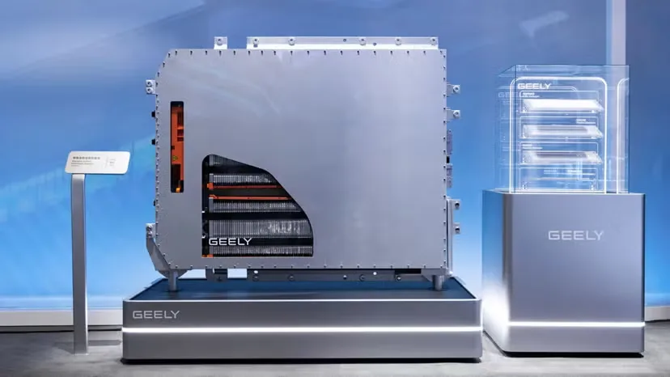
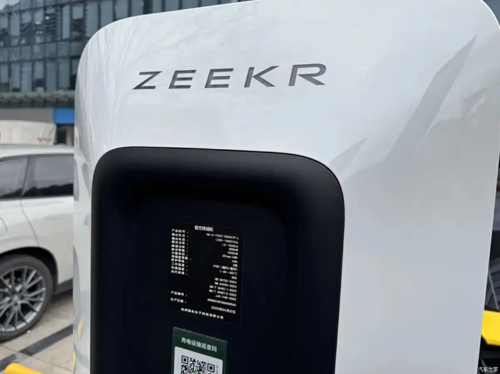
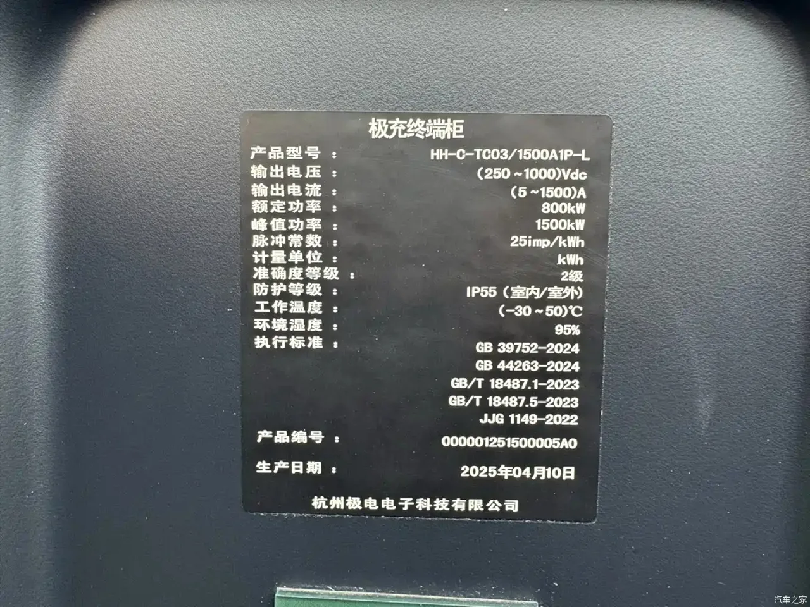

▲ 중국의 초급속 충전소. 충전 시간이 전기차 경쟁의 새 전선이 됐다
전기차 충전 시간은 오랫동안 400V에서 800V로 넘어가는 문제였습니다. 전압을 두 배로 올리면 같은 전력을 절반의 전류로 보낼 수 있고, 발열이 줄어 더 빨리 충전할 수 있기 때문입니다.
지리는 그 다음 칸을 건너뛰지 않고 바로 밟았습니다. 8월 29일(현지시간), 배터리 잔량 10%에서 80%까지 5분 30초 이하로 충전하는 1000V 고전압 아키텍처 개발을 공식 발표했습니다.
1. 1000V가 바꾸는 것
이번 발표의 핵심은 전압 숫자 자체가 아닙니다. 무엇까지 함께 바꾸느냐입니다.
지리가 밝힌 통합 범위는 넓습니다. 배터리와 전기모터, 전력 제어장치, 배선은 물론 차체 설계까지 고전압 부품과 시스템을 통합해 표준화한다는 것입니다.

▲ 지리가 공개한 전력 시스템. 부품 단위가 아니라 아키텍처 단위의 전환이다 ⓒ 지리자동차

▲ 지리는 갤럭시 등 자체 브랜드와 지커·링크앤코를 함께 운영한다 ⓒ 지리자동차
차체까지 포함된다는 대목이 중요합니다. 전압이 높아지면 절연 거리와 냉각, 안전 차단 구조가 함께 바뀌어야 합니다. 부품만 고전압으로 갈아 끼우는 방식으로는 한계가 있다는 판단입니다.
📍 전압을 올리면 왜 빨라지나
충전 전력은 전압 곱하기 전류입니다. 같은 전력을 내려면 전압이 낮을수록 전류를 많이 흘려야 하는데, 전류가 커지면 발열이 제곱으로 늘어납니다.
그래서 400V 시스템은 케이블과 커넥터가 버티지 못해 출력을 제한합니다. 전압을 1000V로 올리면 같은 전력을 더 적은 전류로 보낼 수 있어 발열 부담이 줄고, 그만큼 충전 출력을 높일 여지가 생깁니다.
2. 링크앤코 10이 이미 보여준 수치
이번 발표는 링크앤코 10 세단의 성능 보도에서 촉발됐습니다. 이 차는 자체 테스트에서 10~97% 충전에 8분 42초, 10~80% 충전에 5분 32초를 기록했습니다.
당초 900V 아키텍처가 적용된 것으로 알려졌습니다. 지리는 이에 대해 95kWh 배터리의 정격 전압이 772.8V로 작동해 800V 사양을 충족한다고 확인했습니다. 아직 1000V가 아니라는 뜻입니다.

▲ 지리 계열 지커는 충전 인프라 구축을 함께 진행해 왔다 ⓒ 지커

▲ 지리 계열 모델. 800V 사양에서 이미 5분대 충전에 근접했다 ⓒ 지리자동차
같은 계열의 지커 001도 비슷한 성적을 냅니다. 12C 충전이 가능한 이른바 골든 배터리와 1500kW 충전기를 조합해 10~80%를 7분에 채우는 것으로 알려졌습니다.
즉 5분 30초라는 목표는 800V 사양에서 이미 근접했고, 1000V는 그것을 안정적으로 재현하기 위한 다음 단계입니다. 실험실 수치를 상용 조건으로 옮기는 작업에 가깝습니다.
3. 차보다 충전기가 먼저 깔렸다
이 계획이 공허하지 않은 이유는 인프라입니다. 지리는 1000V 아키텍처를 지원하기 위해 이미 고출력 충전 인프라 구축에 착수했습니다.

▲ 지커 충전기 실물. 지리는 차보다 충전기를 먼저 깔았다 ⓒ 지커
2026년 3월 기준으로 자사 지커 브랜드를 통해 최대 출력 1500kW급 단일 충전기를 2,100기 이상 설치했습니다. 차가 나오기 전에 충전기를 먼저 깐 구조입니다.

▲ 충전기에 붙은 사양 라벨. 정격 1500kW, 출력 전압 1000Vdc 이하로 표기돼 있다 ⓒ 지커
충전기에 붙은 사양 라벨이 이 계획의 방향을 그대로 보여줍니다. 정격 출력 1500kW, 출력 전압 상한 1000Vdc로 표기돼 있습니다. 충전기 쪽은 이미 1000V를 받을 준비가 끝나 있고, 남은 것은 차량 아키텍처였던 셈입니다.
| 구분 | 출력 |
|---|---|
| 지커 1500kW급 충전기 | 설치 2,100기 이상(2026년 3월) |
| 링크앤코 10 @ 지커 충전기 | 최대 1100kW (80% 이후 500kW 이상 유지) |
| 링크앤코 10 @ BYD 플래시 충전소 | 430kW |
| 국내 일반 급속기 | 통상 50~350kW급 |
수치를 읽을 때 주의할 점이 있습니다. 최근 테스트에서 링크앤코 10은 지커 1500kW 충전기에서 최대 1100kW를 받아들였고, BYD 플래시 충전소에서는 430kW에 그쳤습니다. 이 430kW는 BYD 충전기의 사양이 아니라, 같은 차가 그 충전소에서 실제로 받은 값입니다.
더 눈여겨볼 것은 지속력입니다. 링크앤코 10은 배터리가 80%에 도달한 뒤에도 500kW 이상을 유지한 것으로 전해졌습니다. 초급속 충전은 피크 출력보다 그 출력을 얼마나 오래 유지하느냐가 실제 충전 시간을 결정합니다.

▲ BYD는 출력 대신 설치 속도로 경쟁하고 있다 ⓒ BYD
BYD는 다른 축에서 경쟁하고 있습니다. 출력 경쟁 대신 설치 밀도입니다. 8월 말 기준 플래시 충전소 1만 개를 넘겼고, 이용자는 183만 명, 그중 33%는 BYD 차량이 아닌 것으로 집계됐습니다. 연말까지 중국에 2만 개(도심 1만 8,000, 고속도로 2,000)를 짓겠다는 계획입니다.
즉 지리는 출력, BYD는 접근성으로 갈렸습니다. 1100kW를 받을 수 있어도 그 충전기가 없으면 소용이 없고, 어디에나 있어도 430kW면 시간이 걸립니다.
4. 경쟁의 축이 가격에서 전압으로
지리의 행보가 보여주는 것은 중국 전기차 업계의 경쟁 축이 이동했다는 사실입니다. 가격 경쟁을 넘어 충전 속도와 플랫폼 기술 쪽으로 무게가 옮겨가고 있습니다.
전략의 특징은 동시 개발입니다. 차량 아키텍처와 충전 인프라를 따로 두지 않고 함께 설계해, 충전 시간을 한 번에 줄이겠다는 접근입니다. 어느 한쪽만 앞서 나가면 성능이 나오지 않기 때문입니다.
이 구조는 완성차 단독으로는 흉내 내기 어렵습니다. 충전기를 직접 깔지 않는 브랜드는 공용 충전 인프라의 출력 한계를 그대로 떠안게 됩니다.
5. 배터리와 플랫폼을 파는 회사로
지리는 순수 전기차만 밀고 있는 것이 아닙니다. 하이브리드 기술 개발도 병행하며 전동화 시장에 대응하고 있습니다.
더 주목할 대목은 공급 계획입니다. 지리는 향후 볼보 등 글로벌 계열사에 전고체 배터리를 공급할 계획이고, 포드 역시 지리의 공유 플랫폼을 기반으로 한 모델 개발을 추진하고 있습니다.
즉 지리는 차를 파는 회사에서 플랫폼과 배터리를 파는 회사로 영역을 넓히고 있습니다. 완성차 경쟁에서 이기는 것과 별개로, 경쟁사의 차 안에 자사 기술을 넣는 경로를 함께 여는 것입니다.

▲ 국내 공용 급속기는 통상 50~350kW급이다. 차의 수전 능력만 올라가도 소용이 없다 ⓒ 한국전력
국내 시장 관점에서 보면 두 가지가 남습니다. 하나는 충전 출력 경쟁이 400V·800V 논쟁을 지나 1000V로 넘어가고 있다는 점이고, 다른 하나는 국내 공용 충전 인프라의 출력 상한이 이 속도를 따라갈 수 있느냐입니다. 차가 1100kW를 받아들여도 충전기가 350kW면 의미가 없습니다.
정리하면 이렇습니다. 5분 30초라는 숫자보다 중요한 것은 그 숫자를 차와 충전기를 같이 만드는 회사가 냈다는 사실입니다. 이 조합을 갖추지 못한 브랜드에게는 따라가기 어려운 종류의 격차입니다.